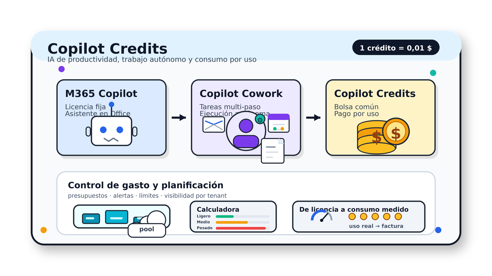
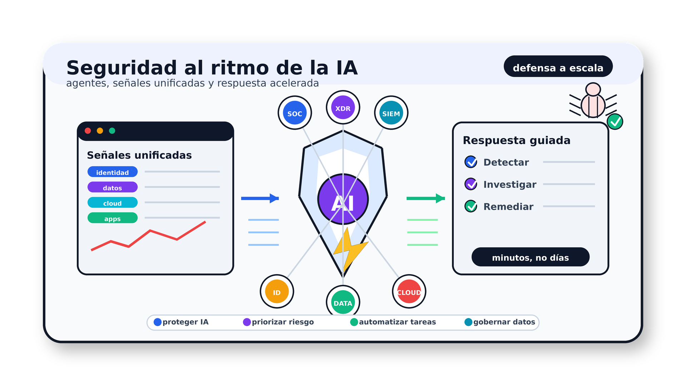
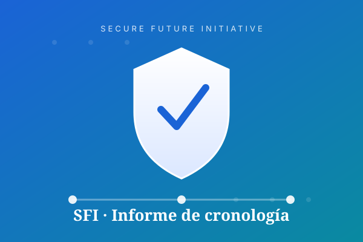

Provenance, IA y creatividad
Sobre el origen de los contenidos, la creación asistida y el riesgo de exigir a las personas que demuestren que su trabajo es humano.
Sobre el origen de los contenidos, la creación asistida y el riesgo de exigir a las personas que demuestren que su trabajo es humano.

Explicación operativa sobre consumo, créditos y escenarios de adopción para equipos que trabajan con Copilot.

Visión estructurada sobre defensa moderna frente a agentes autónomos, gobierno de IA y protección de datos.

Cronología del Secure Future Initiative: hitos, avances y contexto de la estrategia de seguridad.
Histórico completo de publicaciones por año. Pulsa cada año para desplegar sus meses.